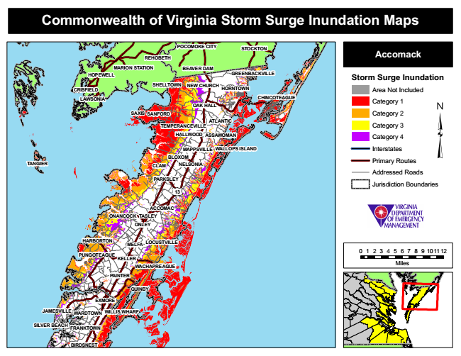

Commonwealth of Virginia Storm Surge Inundation Maps
REHOBETH
POCOMOKE CITY
STOCKTON
Accomack
MARION STATION
BEAVER DAM
Storm Surge Inundation NEW CHURCH
Area Not Included
LAWSONIA
Category 1
Category 2
Category 3
Category 4
MAPPSVILLE
WALLOPS ISLAND
Interstates
Primary Routes
Addressed Roads
Jurisdiction Boundaries
0 1 2 3 4 5 6 7 8 9 101112
Miles
JAMESVILLE
HOPEWELL
GREENBACKVILLE
TEMPERANCEVILLE
13
WARDTOWN
SHELLTOWN CRISFIELD
HARBORTON
FRANKTOWN
BIRDSNEST
HORNTOWN
HALLWOOD
CHINCOTEAGUE
OAK HALL SAXIS
NELSONIA
ONLEY
MELFA
SANFORD
PAINTER
ATLANTIC
ASSAWOMAN
BLOXOM TANGIER
CLAM
PARKSLEY
ONANCOCK
ACCOMAC TASLEY
LOCUSTVILLE
PUNGOTEAGUE
KELLER
WACHAPREAGUE
QUINBY
EXMORE
WILLIS WHARF
SILVER BEACH